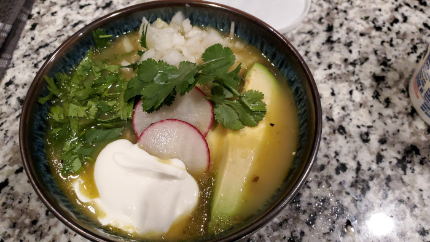

Pollo Verde Soup
Back

Matty Matheson's Pollo Verde Soup
One of the best Youtube chef's make's a Pollo Verde Soup
Ingredients
- 1 onion, chopped
- 1 green pepper, chopped
- 1 poblano, chopped
- 1 jalapeno pepper, chopped
- 1 cubanelle pepper, chopped
- 3 celery stalks, chopped
- 4 garlic cloves
- 2-3 tbsp canola oil
- 1 whole chicken, divided into 8 parts
- salt
- 6 -8 tomatillos, husked and cut in half
- 5 cups chicken stock
- 2 cups canned hominy, drained and rinsed
- 1/2 white onion, finely chopped
- 1 avocado, sliced
- 3-4 radishes, diced
- 1 cup cilantro, chopped
- 1 cup Mexican crema or sour cream
Steps
- Place onion, peppers, celery, and garlic in a blender and pulse until smooth. Set aside
- Set oven to broil.
- Heat oil over medium-high in a heavy bottom pot or dutch oven.
- Season chicken with salt. Place chicken parts in pot and brown, about two minutes per side. Work in batches to avoid crowding the pan.
- Meanwhile, place tomatillo halves cut side down in a cast-iron pan. Broil until skins are charred and tomatillos have released their juices, about 5 minutes.
- Remove chicken from pot. Add in onion, pepper mixture to the pot. Reduce heat to medium and continue to cook until the mixture becomes golden, about 30 minutes stirring often.
- Place the chicken pieces back in the pot along with the tomatillos and all the juices that were released in the pan.
- Pour chicken stock into the pot and increase heat to high. Bring to an immediate boil then reduce heat to low and cover. Simmer until chicken is cooked through and tender, about 90 minutes.
- Season with salt and pepper. Pour in hominy and stir to warm through.
- Divide into bowls and garnish with onion, avocado, radish, cilantro, and sour cream.